2-7막 · 키론과의 만남
한국어 번역은 독일어 원문에 대응하는 자동 번역 초안입니다.
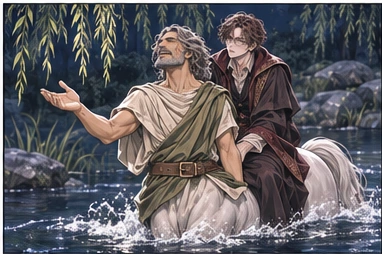
독일어 원문 · 한국어 번역
CHIRON:
Im hehren Argonautenkreise
War jeder brav nach seiner eignen Weise,
Und nach der Kraft, die ihn beseelte,
Konnt' er genügen, wo's den andern fehlte.키론: Argonauts의 고귀한 서클에서 다들 나름대로 괜찮았는데, 그리고 그에게 생기를 불어넣은 힘에 따라, 그는 다른 사람들이 부족한 곳에서 충분할 수 있었습니다.
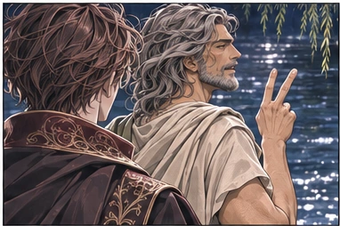
독일어 원문 · 한국어 번역
Die Dioskuren haben stets gesiegt,
Wo Jugendfüll' und Schönheit überwiegt.
Entschluß und schnelle Tat zu andrer Heil,
Den Boreaden ward's zum schönsten Teil.Dioscuri는 항상 승리했습니다. 젊음과 아름다움이 만연한 곳. 타인의 구원을 위한 결심과 신속한 행동, Boreads에게는 가장 좋은 부분이었습니다.
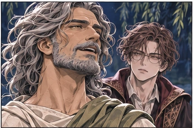
독일어 원문 · 한국어 번역
Nachsinnend, kräftig, klug, im Rat bequem,
So herrschte Jason, Frauen angenehm.
Dann Orpheus: zart und immer still bedächtig,
Schlug er die Leier allen übermächtig.사려 깊고, 강하고, 영리하고, 의회에서 편안하고, 그래서 제이슨은 여성을 유쾌하게 통치했습니다. 그렇다면 오르페우스는 섬세하고 언제나 조용히 사려깊으며, 그는 모든 사람을 압도하는 거문고를 이겼습니다.
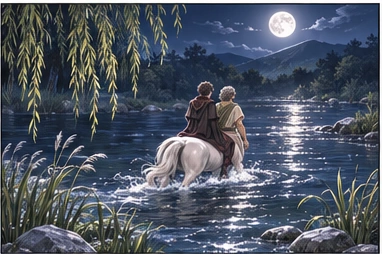
독일어 원문 · 한국어 번역
Scharfsichtig Lynceus, der bei Tag und Nacht
Das heil'ge Schiff durch Klipp' und Strand gebracht...
Gesellig nur läßt sich Gefahr erproben:
Wenn einer wirkt, die andern alle loben...낮과 밤을 가리지 않는 예리한 시력의 린세우스 절벽과 해변을 지나 인도된 성스러운 배.. 위험은 사회적으로만 테스트할 수 있습니다. 한 사람이 일하면 모두가 칭찬한다..
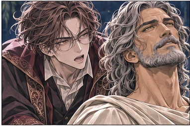
독일어 원문 · 한국어 번역
FAUST:
Von Herkules willst nichts erwähnen?
CHIRON:
O weh! errege nicht mein Sehnen...
Ich hatte Phöbus nie gesehn,
Noch Ares, Hermes, wie sie heißen;파우스트: 헤라클레스에 대해 언급하고 싶지 않으신가요? 키론: 아 이런! 내 그리움을 자극하지 마세요... 나는 페뷔스를 본 적이 없고, 아레스(Ares), 헤르메스(Hermes)도 아니다.
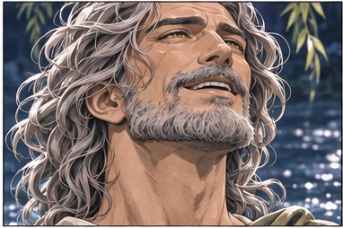
독일어 원문 · 한국어 번역
Da sah ich mir vor Augen stehn,
Was alle Menschen göttlich preisen.
So war er ein geborner König,
Als Jüngling herrlichst anzuschaun;그러다가 눈앞에 보니, 모든 사람이 신이라고 찬양하는 것. 그래서 그는 태어난 왕이었습니다. 젊었을 때 보기에도 아름답습니다.
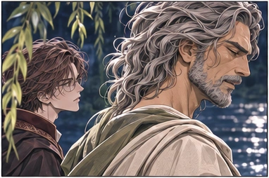
독일어 원문 · 한국어 번역
Dem ältern Bruder untertänig
Und auch den allerliebsten Fraun.
Den zweiten zeugt nicht Gäa wieder,
Nicht führt ihn Hebe himmelein;형에게 복종하다 그리고 가장 사랑받는 여성들이기도 합니다. 가이아는 둘째를 낳지 않고, 헤베는 그를 천국으로 데려가지 않을 것이다.
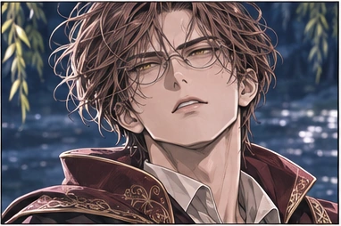
독일어 원문 · 한국어 번역
Vergebens mühen sich die Lieder,
Vergebens quälen sie den Stein.
FAUST:
So sehr auch Bildner auf ihn pochen,
So herrlich kam er nie zur Schau.노래는 헛되이 노력하고, 그들은 돌을 헛되이 괴롭힌다. 파우스트: 아무리 예술가들이 주장해도 그는 결코 그렇게 아름답게 보여지지 않았습니다.
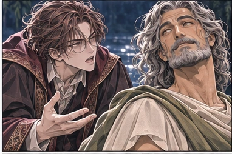
독일어 원문 · 한국어 번역
Vom schönsten Mann hast du gesprochen,
Nun sprich auch von der schönsten Frau!
CHIRON:
Was!... Frauenschönheit will nichts heißen,
Ist gar zu oft ein starres Bild;당신은 가장 아름다운 남자에 대해 말했고, 이제 가장 아름다운 여성에 대해 이야기해 보세요! 키론: 뭐!... 여자의 아름다움은 아무 의미도 없고, 경직된 이미지인 경우가 너무 많습니다.
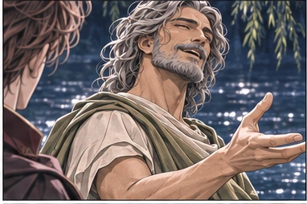
독일어 원문 · 한국어 번역
Nur solch ein Wesen kann ich preisen,
Das froh und lebenslustig quillt.
Die Schöne bleibt sich selber selig;
Die Anmut macht unwiderstehlich,그런 존재만이 내가 찬양할 수 있고, 그것은 삶의 기쁨과 기쁨을 풍깁니다. 아름다운 사람은 자신에게 여전히 행복한 상태로 남아 있습니다. 그 은혜가 당신을 거부할 수 없게 만들고,
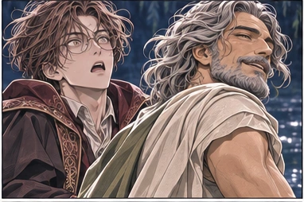
독일어 원문 · 한국어 번역
Wie Helena, da ich sie trug.
FAUST:
Du trugst sie? +
CHIRON:
Ja, auf diesem Rücken.
FAUST:
Bin ich nicht schon verwirrt genug?내가 그녀를 안고 있었기 때문에 헬레나처럼. 파우스트: 당신은 그것을 입었습니까? + 키론: 네, 이 뒷면에요. 파우스트: 나는 이미 충분히 혼란스럽지 않은가?
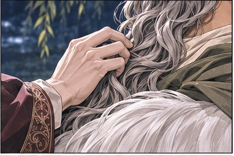
독일어 원문 · 한국어 번역
Und solch ein Sitz muß mich beglücken!
CHIRON:
Sie faßte so mich in das Haar,
Wie du es tust. +
FAUST:
O ganz und gar그리고 그런 자리는 나를 행복하게 해줄 것입니다! 키론: 그 사람이 내 머리를 그렇게 잡아당겼는데, 당신처럼요. + 파우스트: 아 완전
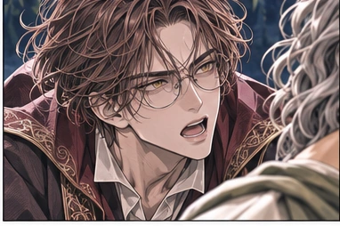
독일어 원문 · 한국어 번역
Verlier' ich mich! Erzähle, wie?
Sie ist mein einziges Begehren!
Woher, wohin, ach, trugst du sie?
CHIRON:
Die Frage läßt sich leicht gewähren.나는 나 자신을 잃고 있어요! 어떻게 말해주세요? 그녀는 나의 유일한 소망입니다! 어디서, 어디서, 오, 그걸 가지고 다녔나요? 키론: 질문은 쉽게 대답됩니다.
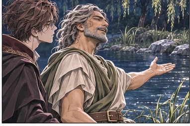
독일어 원문 · 한국어 번역
Die Dioskuren hatten jener Zeit
Das Schwesterchen aus Räuberfaust befreit.
Doch diese, nicht gewohnt, besiegt zu sein,
Ermannten sich urd stürmten hintendrein.Dioscuri는 그 시간을 보냈습니다 여동생은 Robber's Fist에서 풀려났습니다. 하지만 이들은 패배에 익숙하지 않아 그들은 모여서 그들을 뒤쫓았습니다.
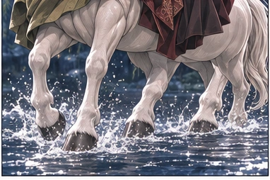
독일어 원문 · 한국어 번역
Da hielten der Geschwister eiligen Lauf
Die Sümpfe bei Eleusis auf;
Die Brüder wateten, ich patschte, schwamm hinüber;
Da sprang sie ab und streichelte그러자 남매는 재빨리 달려갔다. Eleusis 근처의 늪; 형제들은 물장구를 치고, 나는 물장구를 치고, 헤엄쳐 건너갔습니다. 그러자 그녀는 뛰어내려 쓰다듬어줬어요
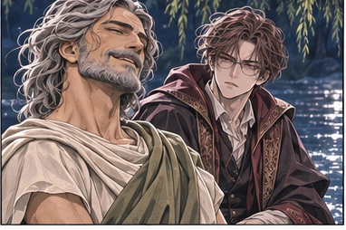
독일어 원문 · 한국어 번역
Die feuchte Mähne, schmeichelte
Und dankte lieblich-klug und selbstbewußt.
Wie war sie reizend! jung, des Alten Lust!
FAUST:
Erst zehen Jahr!... +젖은 갈기가 아첨했다 그리고 친절하고 영리하며 자신감 있게 감사를 표했습니다. 그녀는 정말 사랑스러웠어요! 젊은이, 노인의 기쁨! 파우스트: 10년만!... +
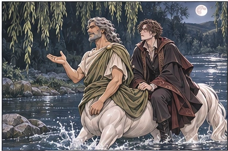
독일어 원문 · 한국어 번역
CHIRON:
Ich seh', die Philologen,
Sie haben dich so wie sich selbst betrogen.
Ganz eigen ist's mit mythologischer Frau,
Der Dichter bringt sie, wie er's braucht, zur Schau:키론: 나는 언어학자들을 본다 그들은 당신뿐만 아니라 그들 자신도 배신했습니다. 신화 속 여성과의 관계는 매우 특별합니다. 시인은 필요에 따라 그것들을 제시합니다.
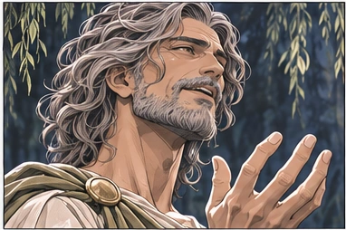
독일어 원문 · 한국어 번역
Nie wird sie mündig, wird nicht alt,
Stets appetitlicher Gestalt,
Wird jung entführt, im Alter noch umfreit;
Gnug, den Poeten bindet keine Zeit.그녀는 결코 자라지 않고, 늙지도 않는다. 항상 식욕을 돋우는 모양, 어릴 때 납치됐다가 늙어서 빼앗긴다. 시인에게는 시간이 없습니다.
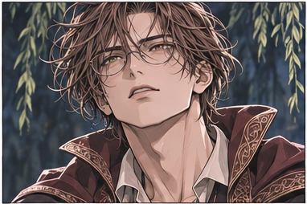
독일어 원문 · 한국어 번역
FAUST:
So sei auch sie durch keine Zeit gebunden!
Hat doch Achill auf Pherä sie gefunden,
Selbst außer aller Zeit. Welch seltnes Glück:
Errungen Liebe gegen das Geschick!파우스트: 그러니 시간에 얽매이지 마세요! 아킬레스는 페라에서 그녀를 발견했고, 시간이 지나도. 정말 드문 행운입니다. 운명에 맞서 사랑을 이루다!
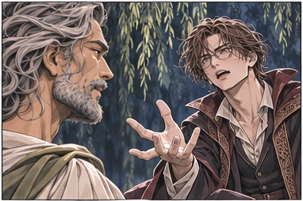
독일어 원문 · 한국어 번역
Und sollt' ich nicht, sehnsüchtigster Gewalt,
Ins Leben ziehn die einzigste Gestalt?
Das ewige Wesen, Göttern ebenbürtig,
So groß als zart, so hehr als liebenswürdig?그리고 폭력을 가장 갈망하는 나는, 유일한 형태를 삶에 그리시겠습니까? 신과 동등한 영원한 존재, 키가 가늘고 가늘고, 고귀하고 사랑스럽습니까?
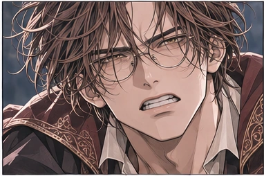
독일어 원문 · 한국어 번역
Du sahst sie einst; heut hab' ich sie gesehn,
So schön wie reizend, wie ersehnt so schön.
Nun ist mein Sinn, mein Wesen streng umfangen;
Ich lebe nicht, kann ich sie nicht erlangen.당신은 그녀를 한 번 본 적이 있습니다. 오늘 그녀를 봤어 사랑스러운 만큼 아름답고, 기대한 만큼 아름답습니다. 이제 내 마음, 내 존재는 엄격하게 격리되어 있습니다. 나는 살지 않는다. 나는 그것을 얻을 수 없다.
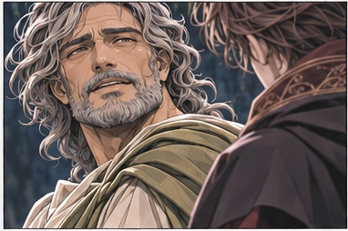
독일어 원문 · 한국어 번역
CHIRON:
Mein fremder Mann! als Mensch bist du entzückt;
Doch unter Geistern scheinst du wohl verrückt.
Nun trifft sich's hier zu deinem Glücke;
Denn alle Jahr, nur wenig Augenblicke,키론: 내 이상한 사람! 인간으로서 당신은 기뻐합니다. 그런데 당신은 유령들 사이에서 미친 것 같습니다. 이제 그것은 당신의 행운입니다. 왜냐면 매년 단 몇 분이라도,
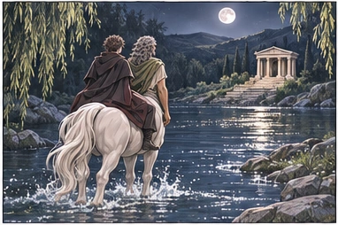
독일어 원문 · 한국어 번역
Pfleg' ich bei Manto vorzutreten,
Der Tochter äskulaps; im stillen Beten
Fleht sie zum Vater, daß, zu seiner Ehre,
Er endlich doch der ärzte Sinn verkläre만토에 출연했었죠 Aesculapius의 딸; 묵묵히 기도하면서 그녀는 아버지께 아버지의 영광을 위해 기도합니다. 그는 마침내 의사의 마음을 변화시켰습니다
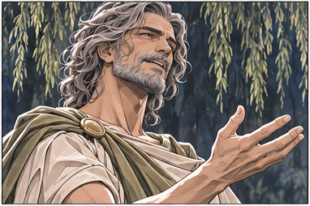
독일어 원문 · 한국어 번역
Und vom verwegnen Totschlag sie bekehre...
Die liebste mir aus der Sibyllengilde,
Nicht fratzenhaft bewegt, wohltätig milde;
Ihr glückt es wohl, bei einigem Verweilen,그리고 그들을 대담한 살인으로부터 전환시키세요... 시빌 길드의 사랑하는 여러분, 기괴하게 움직이지 않고 자비롭게 온화합니다. 조금만 참으면 아마 성공할 것이다.
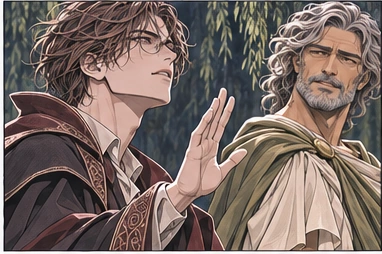
독일어 원문 · 한국어 번역
Mit Wurzelkräften dich von Grund zu heilen.
FAUST:
Geheilt will ich nicht sein, mein Sinn ist mächtig;
Da wär' ich ja wie andre niederträchtig.
CHIRON:
Versäume nicht das Heil der edlen Quelle!뿌리의 힘으로 처음부터 자신을 치유합니다. 파우스트: 나는 치유되기를 원하지 않습니다. 내 마음은 강력합니다. 그러면 나도 다른 사람들처럼 사악해질 것입니다. 키론: 고귀한 근원의 힐링을 놓치지 마세요!
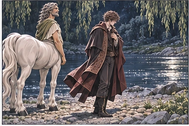
독일어 원문 · 한국어 번역
Geschwind herab! Wir sind zur Stelle.
FAUST:
Sag an! Wohin hast du, in grauser Nacht,
Durch Kiesgewässer mich ans Land gebracht?
CHIRON:
Hier trotzten Rom und Griechenland im Streite,빨리 내려와! 우리는 거기에 있습니다. 파우스트: 말해보세요! 회색빛 밤에 너는 어디로 갔는가 나를 자갈이 많은 물을 통해 땅으로 데려왔나요? 키론: 여기서 로마와 그리스는 분쟁으로 서로 반항했고,
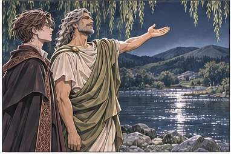
독일어 원문 · 한국어 번역
Peneios rechts, links den Olymp zur Seite,
Das größte Reich, das sich im Sand verliert;
Der König flieht, der Bürger triumphiert.
Blick auf! hier steht, bedeutend nah,오른쪽이 페네이오스, 왼쪽이 올림푸스, 모래 속에 사라진 가장 위대한 제국; 왕은 도망치고 시민은 승리한다. 찾다! 여기 아주 가까이 서 있어요.
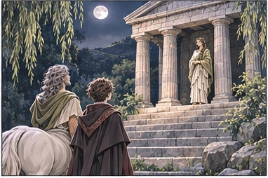
독일어 원문 · 한국어 번역
Im Mondenschein der ewige Tempel da.
MANTO:
Von Pferdes Hufe
Erklingt die heilige Stufe,
Halbgötter treten heran.달빛 속에 있는 영원한 사원. 만토: 말발굽에서 거룩한 발걸음 소리가 들리고, 반신이 접근합니다.
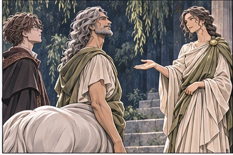
독일어 원문 · 한국어 번역
CHIRON:
Ganz recht!
Nur die Augen aufgetan!
MANTO:
Willkommen! ich seh', du bleibst nicht aus.
CHIRON:
Steht dir doch auch dein Tempelhaus!키론: 맞습니다! 그냥 눈을 뜨세요! 만토: 환영합니다! 나는 당신이 멀리 떨어져 있지 않은 것을 참조하십시오. 키론: 당신의 사당도 당신에게 잘 어울립니다!
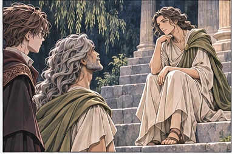
독일어 원문 · 한국어 번역
MANTO:
Streiftst du noch immer unermüdet?
CHIRON:
Wohnst du doch immer still umfriedet,
Indes zu kreisen mich erfreut.
MANTO:
Ich harre, mich umkreist die Zeit.만토: 아직도 쉬지 않고 돌아다니고 있나요? 키론: 당신은 항상 평화롭고 조용하게 살고 있습니다. 한편, 돌고 있는 것은 나를 행복하게 만든다. 만토: 나는 기다린다. 시간은 내 주위를 돌고 있다.
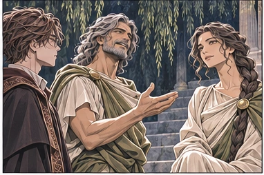
독일어 원문 · 한국어 번역
Und dieser? +
CHIRON:
Die verrufene Nacht
Hat strudelnd ihn hierher gebracht.
Helenen, mit verrückten Sinnen,그리고 이건? + 키론: 악명 높은 밤 소용돌이가 그를 여기로 데려왔다. 미친 감각을 지닌 헬렌은
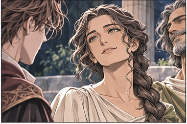
독일어 원문 · 한국어 번역
Helenen will er sich gewinnen
Und weiß nicht, wie und wo beginnen;
Asklepischer Kur vor andern wert.
MANTO:
Den lieb' ich, der Unmögliches begehrt.그는 헬렌을 이기고 싶어한다 그리고 어디서부터 어떻게 시작해야 할지 모르겠습니다. Asclepic 치료법은 다른 것보다 가치가 있습니다. 만토: 나는 불가능한 것을 원하는 사람을 사랑합니다.
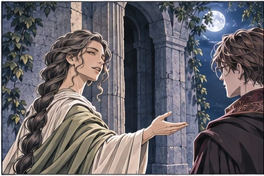
독일어 원문 · 한국어 번역
MANTO:
Tritt ein, Verwegner, sollst dich freuen!
Der dunkle Gang führt zu Persephoneien.
In des Olympus hohlem Fuß만토: 들어와라, 대담한 자여, 기뻐하라! 어두운 복도는 페르세포니아로 이어집니다. 올림푸스의 속이 빈 기슭에서
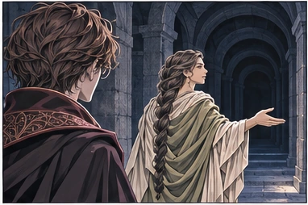
독일어 원문 · 한국어 번역
Lauscht sie geheim verbotnem Gruß.
Hier hab' ich einst den Orpheus eingeschwärzt;
Benutz es besser! frisch! beherzt!
그녀는 비밀리에 금지된 인사를 듣는다. 여기서 나는 한때 오르페우스를 검게 만들었습니다. 그것을 사용하는 것이 좋습니다! 신선한! 용기 있는!